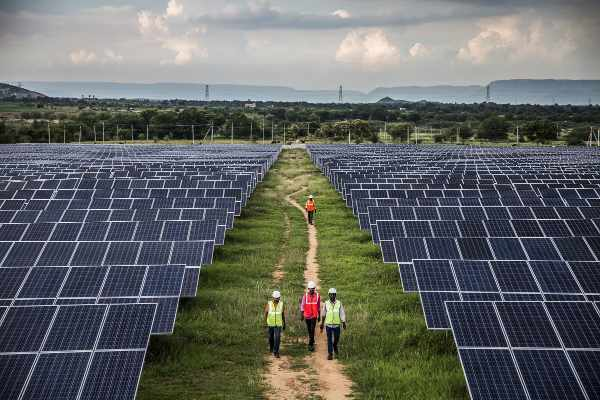
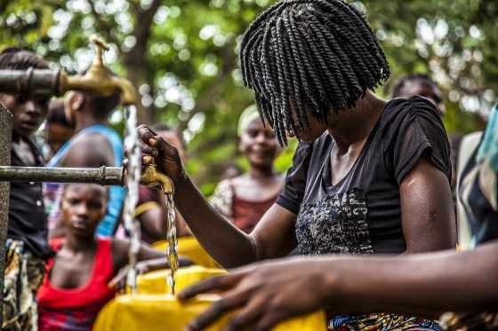

Aide Publique au Développement — Programme APD
Généralités sur l'Aide Publique au Développement
Qu'est-ce que l'Aide Publique au Développement ?
L'Aide Publique au Développement (APD) est un programme qui implique les Organisations Multinationales (OCDE, ONU, FMI, AFD, UA…) puis soutenu et financé par les États occidentaux. Il constitue l'ensemble des dons et financements accordés par les puissances les plus riches de la planète, à l'attention des pays en difficultés. Une aide à hauteur de plusieurs milliards de dollars, dont les pays donateurs sont (les États-Unis, l'Allemagne, le Royaume-Uni, le Japon, la France).
Quelle est la Mission de l'APD ?
La mission principale du programme APD est de favoriser le développement économique des pays du tiers monde, en orientant les différents financements encaissés vers la mise en place de projets concrets et durables, infrastructures essentielles, actions de lutte contre la faim, santé, éducation, etc.
Qui dirige l'APD ?
Le programme APD est dirigé par le CAD (Comité d'Aide au Développement) composé du corps représentatif des Organisations et États impliqués au programme.
Quelques faits sur l'APD
Croissance Économique de l'APD
L'APD des membres du Comité d'aide au développement (CAD), dopée par les dépenses additionnelles mobilisées en vue d'aider les pays en développement, a atteint un haut niveau, soit 161,2 milliards USD, ce qui représente une hausse de 3,5 % en termes réels. L'APD bilatérale destinée à l'Afrique et aux pays les moins avancés a augmenté de respectivement 4,1 % et 1,8 %. L'aide humanitaire a progressé de 6 %.
Si l'on exclut l'aide consacrée à l'accueil des réfugiés dans les pays donneurs — qui a enregistré un recul de 9,5 % pour s'établir à 9,0 milliards USD à mettre essentiellement sur le compte du Canada, de l'Islande et des Pays-Bas — l'APD a augmenté de 4,4 % en termes réels.

L'APD équilibre l'instabilité des Pays en voie de Développement
Financer des projets, améliorer l'accès à l'eau, aux soins et à une éducation de qualité, protéger la biodiversité ou combattre le dérèglement climatique : voilà autant d'objectifs essentiels, à la fois pour les populations des pays en développement et la stabilité internationale. Sauf que de tels objectifs n'intéressent pas toujours les investisseurs publics et privés, qui les jugent trop risqués, voire non prioritaires. « La finance internationale va en général très peu vers les pays à faible revenu et les secteurs sociaux », constate ainsi Hubert de Milly, expert APD à l'Agence française de développement (AFD).
Et c'est là que l'aide publique au développement entre en jeu. En comblant le manque de financements dans certains secteurs et zones délaissés — via des dons, des prêts ou d'autres formes de soutien — elle permet d'impulser le changement pour les populations les plus vulnérables. Souvent, elle entraîne même avec elle d'autres acteurs — banques, entreprises, fondations — accroissant ainsi les sommes consacrées au développement.

L'APD se concentre sur l'Afrique
L'APD permet d'amorcer des projets dans des secteurs ou des zones délaissés. Elle initie des logiques de développement vertueuses et crée des dynamiques susceptibles d'entraîner tous les autres acteurs, notamment les entreprises. Elle crée un effet de levier qui décuple les impacts. Au total, depuis les années 60, l'aide au développement a démontré son efficacité : elle est un puissant facteur de changement pour les populations les plus vulnérables. Cette aide peut porter sur des projets locaux ou de très vastes politiques à l'échelle d'un pays sur le long terme.
Recensement d'Agents au sein du Programme
L'APD, par ses actions, oriente une partie de ces financements, dans le secteur de lancement des projets de développement, à travers les États Africains. Une action qui tient compte des réalités et difficultés rencontrées par Pays.
À cette fin, l'APD requiert et recense par États Africains, des Agents pour le bon fonctionnement et le suivi des différents projets à exécuter.
Les Citoyens adultes d'Afrique résidant dans leurs Pays ou à la Diaspora, sont alors invités sans distinction des qualifications professionnelles, et sans limitation d'âge, à souscrire au Programme dans l'intérêt de contribuer à l'exécution de divers Projets ou Actions sociales, qui seront orientés vers leurs Nations.
Demande
Missions
Tâches : Agent de Représentation
- Représente l'Agent de liaison entre son État et le Comité du Programme.
- Dirige les projets vers son État.
- Dirige les Assistants sur les Tâches de Réalisation des Projets.
- Effectue des rapports d'évolution des projets au Comité du Programme.
Tâches : (04) Assistants
- Aux ordres de l'Agent de Représentation.
- Constituent les Agents de Terrains du Représentant.
- Seront répartis par Secteur d'activité selon qualification.
- Rapportent au Représentant l'évolution des tâches selon leurs Secteurs d'activités.
Privilèges aux participants
- Droits de Travail reconnu à l'international.
- Mûrir les Expériences et Élargir les Relations professionnelles.
- Couverture de Sécurité Sociale (Assurance Santé Familiale, Allocations familiales, Pension de fin de Contrat, Assurance risque Professionnel).
- Véhicule de fonction + Primes de missions et de logements.
Conditions et Critères
- Personnes demandées : Tous Adultes Instruits désirants. (Une formation d'intégration est donnée avant la prise de fonction).
- Localisations concernées : Tous les États Africains.
- Durée du Contrat : CDD 7 ans (Pour achever les Projets).
- Nature : Offres à temps partiels mais rémunérées mensuellement ne contraignant pas les participants à interrompre leurs occupations personnelles. (Sources de rentabilité parallèles).
- Lieu du Travail : Le participant travaille pour son pays dans les projets orientés vers cette destination. Cependant il peut également travailler à l'international s'il le souhaite.
- Offres Valables également aux Retraités ou aux participants de la Diaspora.